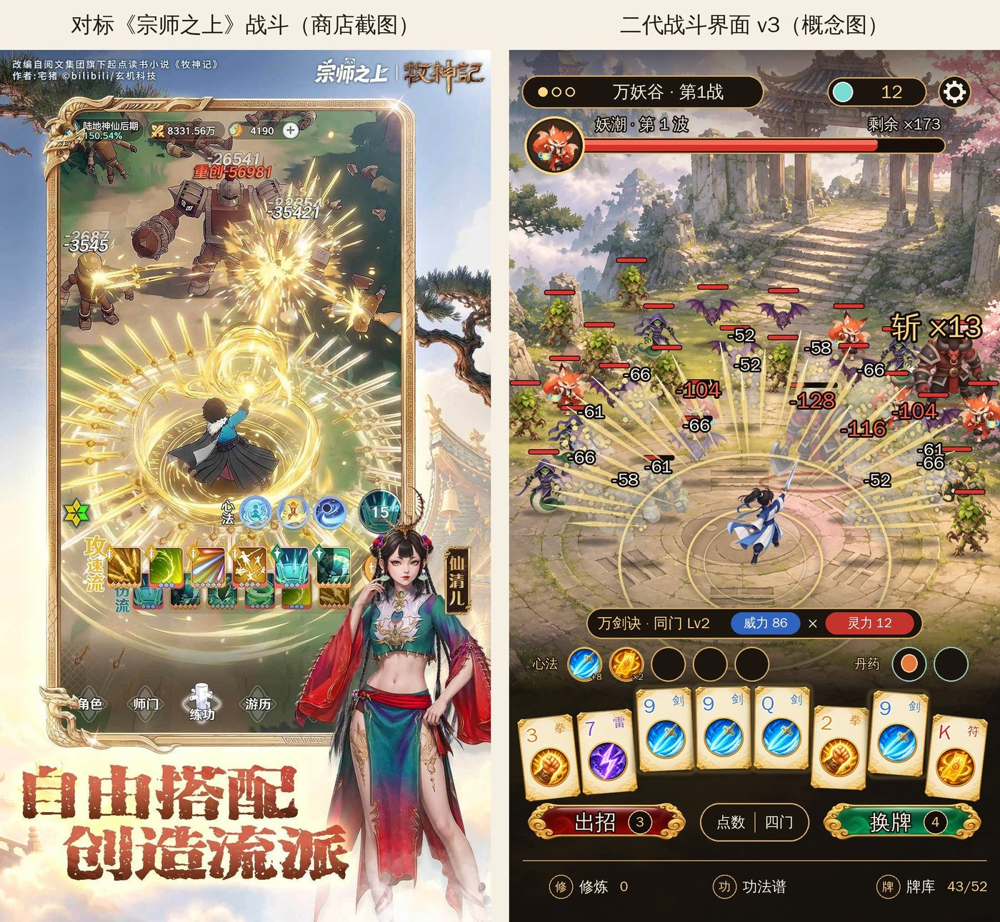
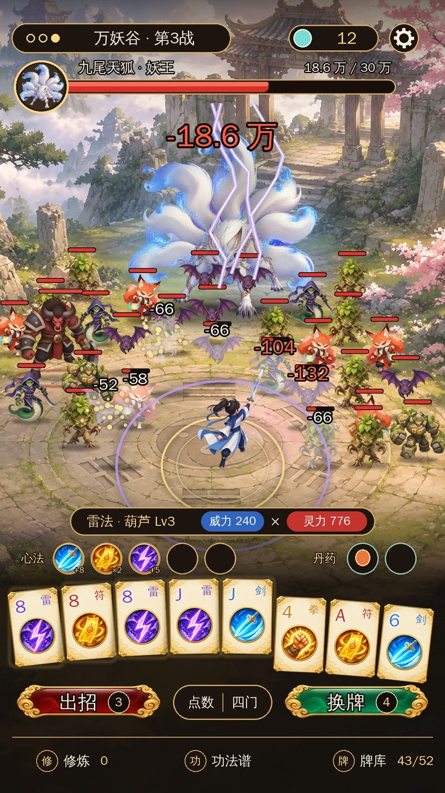
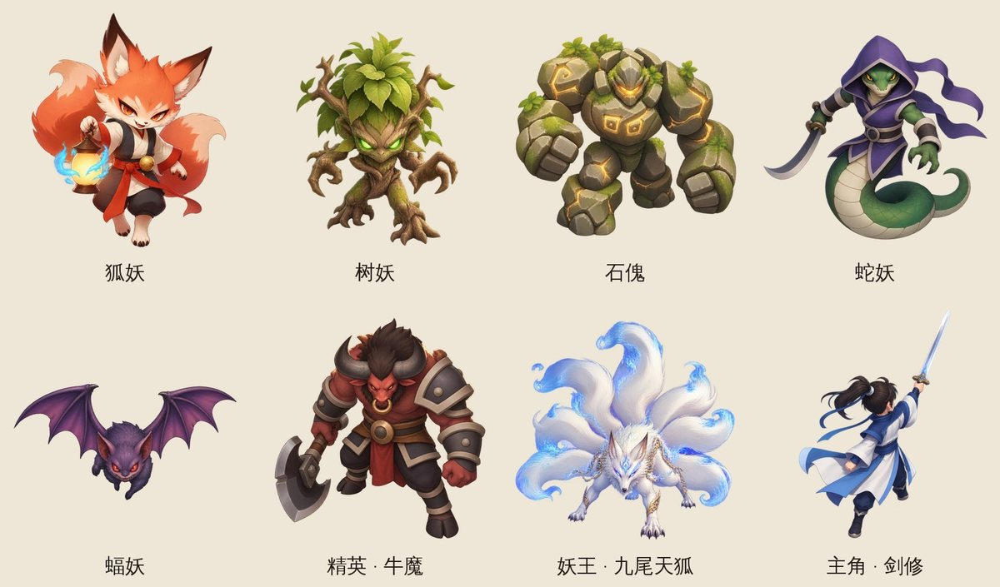

二代立项方案 v3：《修仙肉鸽：一手牌斩尽万妖》（工作名，待确认）
- 日期：2026-11-11
- v3：战斗界面照《宗师之上》的布局重做（全屏 3/4 俯视地图，主角居中，妖潮从上方和两侧围过来），题材重新比较后改推「仙门降妖」。
- v2 是武侠复刻《群侠传：幸存者》，降为备选，放在第 2 节。
- 底子：一代《手搓魔法：从小火球到灭世禁咒》（EmberCards，最新提交 17772c2）。一代仓库和线上应用都不动，二代在新仓库
zwluoqi/EmberCards2 里做。
- 厂商：FIRE工作室（507397）。
- 数据（均为 11-11 实抓）：
- TapTap 榜单 6 个；
- 关键词 54 个（
research/v2/keyword-table.md + research/v2/raw/taptap/kw-*.json）；
- 《宗师之上》《群侠传：幸存者》的详情和评价；
- 团队 135 款游戏的后台数据（
steamdb-creater 11-11 表）。
- 图：
docs/v2/img/v3_*。
- 地图、主角、妖怪、牌框、按钮底板、图标都是团队图片服务（gpt-image-2）这次新出的。
- 文字、血条、布局是按第 5 节的规格画上去的，不再用一代截图。
0. 结论先说
- 战斗界面整个重做，照《宗师之上》（TapTap 774700）的布局：
- 不再切成「上面舞台、下面操作台」两半，整屏是一张 3/4 俯视的地图；
- 主角背对玩家站在阵眼上，妖潮从上方和左右两侧一圈一圈围过来；
- 心法、手牌、按钮、底部导航全部浮在地图上，下沿靠一层墨色渐变托底；
- 招式就是从主角身上放出去的大范围特效（《宗师之上》那一圈金色剑阵）。
- 题材改推「仙门降妖」：仙门弟子下山，一人一剑一副牌，扫平万妖。
- 跟《宗师之上》是同一路「东方幻想」画风（萌而精致的国风厚涂），对标的画面可以直接对照着做。
- 敌人从「人」换成「妖」，割草更顺理成章：
- 狐妖、树妖、石傀、蝠妖形状各不相同，满屏也认得出谁是谁；
- 精英和妖王可以做得很大，比如九尾天狐，是宣传图最好用的镜头；
- 斩妖不打人，审核更省心；
- 和团队已有的《武侠搜打撤》（打的是江湖人）拉开了距离。
- 需求数据：「修仙」前 40 合计 2,705 万关注，「修仙肉鸽」1,595 万（标题 0 款），「妖怪割草」1,568 万（标题 0 款），「降妖」搜索第 1 名就是《宗师之上》。
- 规则引擎一行不改（同 v2）：
- 一波妖潮的血量加起来 = 一代这一关的目标分；
- 每次出招的伤害还是一代算出来的那个数；
- 牌型只决定「先打哪一片」，伤害从最内圈往外扣。
- 要你定的：题材三选一、名字、战斗界面这版的方向对不对、玩法微调、新建还是复用应用（第 14 节）。

1. 一代给二代留下了什么
| 看什么 |
数据 |
说明 |
| 留存（同一套规则） |
《命运牌：九重奏》1003219：次留 22.2%–27.4%，人均 83–110 分钟（11-07～11-11） |
团队 135 款里最好 |
| 吸量 |
同一款：首页点击率 7.8%–8.5% |
团队吸量好的都在 16%–25% |
| 能直接搬的 |
规则引擎（742 个测试）、施法特效框架、禁咒全屏演出、击杀分级、局外成长、名词层 words.lua、录屏 / 截图工具链 |
占一代工作量的大头 |
结论：核心循环不动，力气全花在「题材 + 战斗画面」上，正好对准一代的短板（吸量）。
2. 题材：重新想了一遍
2.1 三个候选
|
A. 仙门降妖（推荐） |
B. 武侠江湖（v2 方案） |
C. 末日异能（v1 方案） |
| 一句话 |
仙门弟子下山，一人扫平万妖谷 |
少侠被八方门派围攻 |
末日里一个人挡住尸潮 |
| 对标 |
《宗师之上》774700：48.6 万关注、55.9 万下载、17.6 万预约，05-19 上线，灵犀发行，竖屏国风放置；画面和布局就是这次照着做的那款 |
《群侠传：幸存者》912144：11-11 热门榜第 2，6.5 万关注，9.3 分 |
《我在末日当房东》118 万，老游戏 |
| 搜索需求（前 40 合计关注 / 标题含词） |
修仙 2,705 万 / 23 款；修仙肉鸽 1,595 万 / 0 款；妖怪割草 1,568 万 / 0 款；山海经 530 万；降妖 204 万（第 1 名就是宗师之上） |
武侠 4,467 万 / 4 款；武侠肉鸽 2,128 万 / 0 款；武侠割草 1,260 万 |
末日 3,121 万；末日异能 2,153 万 / 0 款 |
| 割草的敌人 |
妖：形状、大小、颜色差别大，满屏一眼认得出；精英、妖王可以很大 |
人：剪影都差不多，要靠衣服颜色区分 |
丧尸：剪影也差不多，偏暗 |
| 和《宗师之上》布局的契合 |
最高：同为东方幻想，地图、阵法、剑气全能对照 |
高 |
低：画风要另起炉灶 |
| 团队撞车 |
不撞人；修仙题材团队做过很多（见风险） |
《武侠搜打撤》同题材 |
不撞；末日兵工厂首页点击率 24.9% |
| 审核 |
斩妖，不打人，最省心 |
打人，不出血 |
打丧尸 |
2.2 为什么推 A
- 画面：你要的是《宗师之上》那种画面。它本身就是「东方幻想 + 门派 + 境界」，用 A 时概念图、美术外包、提示词都能直接拿它当参照。B 的武侠也行，但敌人全是人，满屏割草时剪影太像。
- 割草的读法：割草的爽点是「看清自己一下砍倒了一大片」。妖怪的剪影差别大，玩家能看清倒下的是谁。精英牛魔比小妖大一倍，妖王九尾天狐占半屏，都不用看血条就知道。
- 需求：「修仙肉鸽」「妖怪割草」两个品类词合计关注都在 1,500 万以上，标题里一款都没有。
- 离《武侠搜打撤》远：负责人 11-09 否过一次世界观撞车的立项，A 比 B 安全。
2.3 A 的风险，要你知道
- 团队 10-19 的选品分析统计过：修仙题材做了 53 款，只有 4 款起量，命中率 7.5%。修仙小游戏在制造里已经很挤。
- 对策有三条：
- 不做「修仙模拟器」那一路（挂机、境界、炼丹），玩法是一代验证过的卡牌构筑 + 割草；
- 画面卖点是「满屏妖潮被一手牌清空」，不是修仙；
- 标题用「修仙肉鸽」这个空位词。
- 如果你更看重这条命中率，就选 B（武侠）。B 的战斗界面按本方案同样适用，把妖换成门人就行。
2.4 名字（A）
|
名字 |
理由 |
| ① 推荐 |
修仙肉鸽：一手牌斩尽万妖 |
品类大词打头（修仙肉鸽 1,595 万 / 标题 0 款）；副标题讲清「牌」和「割草」 |
| ② |
降妖割草：一副牌扫平万妖谷 |
「妖怪割草」1,568 万 / 0 款的意思直接进标题 |
| ③ |
万妖退散：一手牌降妖 |
更像游戏名，但没有品类大词 |
3. 题材映射：只换名字和画面
| 一代《手搓魔法》 |
二代（A 仙门降妖） |
规则 |
| 元素牌（52 张，四种颜色） |
功法牌，四门：剑 / 拳 / 符 / 雷 |
点数、花色不变 |
| 牌型 → 12 系魔法 |
牌型 → 12 路功法（一剑、双剑、万剑诀、崩山拳、五雷、天罚……） |
不变 |
| 魔攻 × 增幅 = 伤害 |
威力 × 灵力 = 伤害 |
不变 |
| 敌人生命 |
这一波妖潮的总血量 |
不变（数值就是一代的目标分） |
| 8 关 × 3 战 |
8 处妖地 × 3 波（妖潮 / 精英 / 妖王） |
不变 |
| 施放 / 替换 |
出招 / 换牌 |
不变 |
| 装备（小丑牌） |
心法（圆形图标一排，照《宗师之上》心法栏） |
效果不变，改名换图标 |
| 道具 / 升级包 / 魔导天赋 |
丹药 / 功法精进 / 修炼 |
不变 |
| 魔力结晶 |
灵石（按斩妖数给，见 T1） |
|
| 十二系禁咒 |
十二道仙法全屏演出（清屏） |
演出照用，换贴图和名字 |
8 处妖地（全部架空，不用真实地名）：万妖谷 → 石林 → 雾泽 → 枯木林 → 寒潭 → 鬼市 → 雷池 → 妖皇殿。每处 3 种小妖 + 1 种精英 + 1 位妖王。
主角动机（一句话）：封妖大阵碎了，万妖出谷；仙门最小的弟子拿着师父留下的一副功法牌下山。
4. 从打一个 Boss 变成割草：规则一行不改
4.1 一句话
这一波妖的血量加起来，正好等于一代这一关的目标分。
- 每次出招的伤害，还是一代规则引擎算出来的同一个数。
- 表现层只决定伤害落在谁身上、倒下几只。
scripts/game/ 不改，种子复现、bot 模拟、742 个测试照旧有效。
4.2 伤害怎么分到妖潮上（v3 按「圈」分）
- 出招后先按牌型挑出「先挨打」的一组（下图金色的点）。
- 伤害按顺序扣血：
- 先扣这一组；
- 打不完的，从最内圈往外圈扣，每圈从正前方往两侧扣；
- 伤害用完为止。
- 所以斩杀数只由伤害大小决定，牌型只决定先倒的是谁、画面是什么形状。
- 妖王是一个「大血包」：
- 只有带穿透的牌型（四条、同花顺、五条以上）会把妖王放进先挨打的那组；
- 别的牌型要先杀穿它身前的小妖。

4.3 边算分边倒妖
- 规则引擎一瞬间就算出最终伤害。
- 表现层按计分过程里「威力 × 灵力」的实时乘积，把这个伤害分段放出去：
- 每亮一张牌，内圈倒一两只；
- 心法触发、灵力翻倍的那一下，外圈成片倒下；
- 最后招式落下，弹出「斩 ×37」。
- 总伤害一分不差，只是放出来的时机变了。
4.4 剩余出招次数 = 妖潮还有几步
- 每出一次招，没倒的妖整体往主角收一圈。
- 最后一次出招还没清完，妖潮扑上来（妖王波是妖王出手），也就是一代的失败。
4.5 三种波次（数量是起始值，切片阶段用 bot 调）
| 波次 |
组成 |
总只数（第 a 处妖地） |
第 1 处 |
第 8 处 |
| 第 1 波：妖潮 |
这处妖地的 3 种小妖混编 |
30 × 1.3^(a−1) |
30 |
188 |
| 第 2 波：精英 |
小妖 + 约 15% 精英（3 倍血、大一号、脚下红圈） |
40 × 1.3^(a−1) |
40 |
251 |
| 第 3 波：妖王 |
小妖占 70% 血量 + 妖王占 30% |
60 × 1.3^(a−1) + 妖王 |
60 + 1 |
376 + 1 |
- 一局打通约 3,000 只，可以写进简介和成就（「一人斩妖三千」）。
- 打得好的一手牌一次清掉半屏到整波，普通一手清两三成。这是一代数值自带的成长曲线，依据是 bot 模拟：每关最好一手的伤害中位数是目标分的 0.53–1.15 倍。
5. 战斗界面 v3（照《宗师之上》重构）
5.1 《宗师之上》的战斗画面在做什么（拆它的商店截图）
| 层 |
它的做法 |
二代照搬 / 改 |
| 镜头 |
3/4 俯视（约 55°），整屏是一张地图，没有上下分割 |
照搬。一代的「血条分割线」取消 |
| 主角 |
屏幕中下，比小怪大一点，所有特效以他为圆心放出去 |
照搬，主角背对玩家、面朝妖潮 |
| 敌人 |
小体型、Q 一点，头顶一根小红条，从四周往里挤 |
照搬，但规定成 6 圈站位（5.3），同屏上限 40 |
| 招式 |
一圈巨大的金色剑阵、放射剑气，伤害数字满天飞，暴击红字 |
照搬读法；范围由牌型决定（4.2） |
| 顶部 |
很薄：境界、战力、货币；Boss 战加「圆头像 + 长血条」 |
照搬：关卡 + 灵石 + 设置；下面一条「妖潮血条」，普通波写剩余只数，妖王波写名字和血量 |
| 中下 |
「心法」三颗圆图标 + 一排方形技能图标（技能顺序） |
心法 → 一代小丑位（5 颗圆）；技能图标那一排 → 手牌 8 张 |
| 底部 |
角色 / 师门 / 练功 / 游历 导航 |
修炼 / 功法谱 / 牌库（一代底栏三个入口） |
| 画风 |
国风厚涂、阳光暖色、萌而精致 |
照搬，见第 6 节 |
它是放置游戏，技能自动放；二代是回合制出牌，所以下半屏留给手牌和出招 / 换牌按钮，这是和它最大的不同。
5.2 两张概念图
| 普通波：一手「万剑诀 · 同门」，内两圈被剑气扫过，斩 ×13 |
妖王波：九尾天狐站在最后几圈正中，天雷劈下 |
 |
 |
5.3 布局规格（竖屏 1080 × 1920 参考尺寸）

| 区 |
y 范围 |
内容 |
| 顶栏 |
40–140 |
左：关卡胶囊（三颗进度点 + 「万妖谷 · 第 1 战」）；右：灵石、设置。按 11-11 新规不避让胶囊 |
| 妖潮血条 |
150–280 |
圆头像（这一波的代表妖 / 妖王）+ 长条；右上「剩余 ×N」，妖王波写「18.6 万 / 30 万」 |
| 战场 |
300–1150 |
全屏地图，主角脚底 = 阵眼 (540, 1128)；地图向下一直铺到屏幕底，下半屏靠墨色渐变压暗 |
| 读数 |
1226–1298 |
一条胶囊：牌型名 · 等级 + 「威力 N」×「灵力 N」（一代左右两颗数字合成一条，离剑气更近） |
| 心法 / 丹药 |
1310–1394 |
5 颗心法圆图标（一代装备栏）+ 2 颗丹药（一代道具栏） |
| 手牌 |
1400–1640 |
8 张，124 × 184，轻微扇形；选中抬起 40、描金 |
| 按钮 |
1652–1748 |
出招（朱红，带剩余次数）/ 排序（点数｜四门）/ 换牌（翡翠，带剩余次数） |
| 底部导航 |
1780–1900 |
修炼 / 功法谱 / 牌库 43/52 |
妖潮站位：
- 以主角为圆心排 6 圈椭圆，半径 240 / 360 / 480 / 600 / 730 / 870，纵向压成 0.8，就是俯视的地面圆。
- 每圈只排上半圈，从左侧经过正上方排到右侧，同一圈里每只间隔约 120 px。
- 外两圈会出屏幕边：屏幕边上被截掉一半的妖，就是「外面还有」。
- 同屏上限 40，内圈优先站满。倒一只，外圈往里补一格，屏幕外再走进来一只。
- 小妖高 92–140 px，越往上越小（俯视下透视很弱，只缩一点）。
- 精英 1.65 倍大，脚下红圈；蝠妖这类飞行妖悬空 26 px，影子留在地上。
- 妖王站第 4–6 圈正中，高约 470 px，身后一团蓝色妖气。它身前的格子让出来，前面的小妖杀穿后，妖王往前一圈。
- 头顶小红条：小妖 64 px，精英 104 px。
受击和斩杀：
- 被打中的闪白，并飘白色伤害数字；暴击 20%，飘红色大字。
- 被斩的被剑气往外掀飞、旋转、变半透明，碎成金点。
- 右侧大字「斩 ×N」是割草的爽点，要大，要跳。
5.4 和 v2（第一人称）比
|
v2：第一人称 5 排 |
v3：俯视围攻阵 |
| 画面 |
人群从正前方压过来，下半屏是一代的操作台 |
整屏一张地图，主角在阵眼，八方围攻 |
| 主角 |
不出现（只有掌心） |
出现，所有招式从他身上放出去，可以换装 |
| 招式表现 |
打在人群上 |
以主角为圆心的大范围特效，更像《宗师之上》、更像割草 |
| 改动量 |
小：血条以下不动 |
大：战斗界面全部重画（但规则不动） |
6. 美术风格：东方幻想国风厚涂（照《宗师之上》）

| 项 |
规格 |
| 总调 |
阳光暖色、通透，雾和花瓣做空气感；不做暗黑、不做霓虹 |
| 镜头 |
3/4 俯视约 55°，地图、人物、特效用同一个机位 |
| 人物比例 |
地图上的角色头身比约 1 : 3.5，萌而不幼 |
| 小妖 |
一眼能分辨的剪影：狐（橙、灯笼鬼火）、树（绿、枝爪）、石（灰、发光裂纹）、蛇（绿紫、弯刀）、蝠（紫、飞行）。同一处妖地的 3 种小妖要三种主色 |
| 精英 |
比小妖大一倍，深红 + 铁色，脚下红圈 |
| 妖王 |
占半屏，冷色（蓝白妖火）和暖色地图对比 |
| 主角 |
蓝白道袍，背影；后续可换装（《宗师之上》靠时装赚钱，二代先不做付费，但留接口） |
| UI |
墨色半透明底 + 细金边 + 象牙宣纸牌面；按钮是朱红 / 翡翠漆面 + 金色云纹 |
| 特效 |
剑 = 金白剑气，拳 = 橙色冲击波，符 = 红黄符火，雷 = 紫白天雷 |
按负责人「风格化和主流各给一个」的规矩：上面这套是主流方案，和《宗师之上》同路。风格化方案是水墨 Q 版（黑白水墨地图 + 高饱和妖怪），区分度更高，但离你给的对标远一些。你要看的话我再出一版。
要出的图：
| 项 |
数量 |
说明 |
| 小妖 / 精英 / 妖王 |
24 / 8 / 8 |
透明底，俯视 3/4 朝下；不做逐帧，动作靠程序（呼吸、蹭步、受击、掀飞） |
| 妖地地图 |
8 |
竖版，中下有阵眼平台 |
| 主角 |
1 + 换装 |
背影 |
| 功法牌面 |
4 门 + 人像牌 12 |
概念图里已经用了新牌框 |
| 四门特效 |
4 套 |
一代施法特效框架换贴图 |
| 心法图标 |
234 |
第二批：先改名，图标后换 |
7. 程序上要改什么
| 模块 |
复用 |
新做 / 改 |
规则引擎 scripts/game/ |
全部 |
0 |
| 战斗界面 |
计分流程、手牌交互、按钮逻辑 |
重新布局：去掉上下分割，换成全屏地图 + 浮层 UI（第 5.3 节） |
| 妖潮 |
— |
新模块 ui/horde.lua：6 圈站位、补位、伤害分配、倒下、收圈（估计 1,000–1,200 行） |
| 主角 |
— |
新：背影立绘 + 出招动作（程序动画） |
| 施法特效 |
框架和时序 |
以主角为圆心的四门特效；每个牌型加「落点」 |
| 名词层 words.lua |
机制 |
用词全换 |
| 安全区 |
safe.lua |
顶栏、底栏按 11-11 规范铺满，不避让胶囊 |
规则不动的项照一代「表现层不碰规则」的做法做：不读写 run.rng，有同种子回放一致性测试兜底。
8. 玩法微调（都可以单独开关）
| # |
改什么 |
动不动规则 |
建议 |
| T1 |
灵石按斩妖数给：每斩 10 只 +1（代替一代「每赢一战 +10 结晶」） |
只改局外经济 |
开 |
| T2 |
伤害按牌型分到妖潮上、边算分边倒妖（4.2、4.3） |
不动，纯表现 |
开，割草的核心 |
| T3 |
剩余出招次数 = 妖潮收圈（4.4） |
不动，纯表现 |
开 |
| T4 |
超杀奖励：最后一招超过剩余血量 2 倍，额外 +1 金币（每关最多 +2） |
动经济 |
先关 |
| T5 |
出招快一点：倒妖动画和计分动画叠着放，约 7.5 秒 → 5 秒 |
不动，只改节奏 |
开；要你确认 |
9. 里程碑
| 阶段 |
内容 |
过关标准 |
| 切片 |
新战斗界面 + 第 1 处妖地三波打通：6 圈站位、伤害分配、边算分边倒、收圈、清屏；出齐第 1 处妖地的美术 |
你扫码试玩认可「割草爽感」；真机 40 只同屏帧率稳定；同种子回放测试通过 |
| 正式制作 |
8 处妖地美术、文字换皮、局外、配音 |
全流程能打通；bot 通关率和一代持平（±2%） |
| 预约 |
商店素材（第 0 帧就是清屏镜头）、提审 |
走一代的提审清单 |
10. 目标
| 指标 |
一代（命运牌） |
二代目标 |
| 首页点击率 |
8% 左右 |
≥ 15% |
| 次留 |
22%–27% |
≥ 20% |
| 人均时长 |
83–110 分钟 |
≥ 60 分钟 |
11. 风险
- 修仙题材的团队命中率低（7.5%）。见 2.3；不放心就选 B 武侠，界面方案不变。
- 战斗界面改动大：v2 承诺过「血条以下不动」，v3 按你的新要求整个重画。规则不动，但 UI 和交互的工作量比 v2 多，切片周期要多留时间。
- 40 只同屏 + 大范围特效的真机帧率：切片第一件事就测。
- 被看成蹭《宗师之上》：只借布局和画风方向，世界观、人物、妖怪全部原创；玩法完全不同（它是放置，我们是卡牌割草）。
- 审核：不写真实地名、门派、宗教场所；斩妖不出血。
12. 附：之前的方案
- v2（武侠，复刻《群侠传：幸存者》，第一人称 5 排站位）：概念图仍在
img/battle_B_layout.jpg、img/battle_B_boss.jpg、img/enemies_B.jpg、img/style_compare.jpg；群侠传的数据见 research/v2/raw/taptap/。选 B 的话，敌人和地图换成武侠，界面照 v3。
- v1（末日异能）：
img/mock_wave.jpg、img/mock_boss.jpg。
| v2 普通波（第一人称） |
v2 掌门波 |
 |
 |
13. 要你定
- 题材：A 仙门降妖（推荐） / B 武侠江湖 / C 末日异能？
- 名字：①《修仙肉鸽：一手牌斩尽万妖》/ ② / ③？
- 战斗界面 v3 的方向对不对？哪里要改（主角位置、手牌大小、妖潮密度、读数位置）？
- 美术：就按《宗师之上》这路国风厚涂，还是也要看一版水墨 Q 版？
- 玩法微调：T1～T5 哪几项开？（建议开 T1、T2、T3、T5，T4 先关）
- 应用：在 FIRE工作室下新建应用（要查本周新游戏额度），还是拿一款数据差的旧应用换成二代？